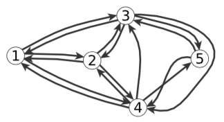

Network Visualization


Venue. In Network Science - An Aerial View, Springer (2019)
Abstract. Data visualization is the art and science of mapping data to graphical variables. In this context, networks give rise to unique difficulties because of inherent dependencies among their elements. We provide a high-level overview of the main challenges and common techniques to address them. They are illustrated with examples from two application domains, social networks and automotive engineering. The chapter concludes with opportunities for future work in network visualization.